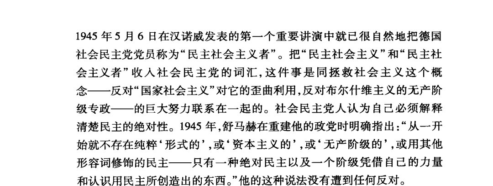

𝐀𝐬𝐡𝐥𝐞𝐲 𝐁𝐥𝐨𝐜𝐤🍥🌹🇹🇼🏳️⚧️
@bolckAshley
😅且不說今天的民主制度跟18世紀那些剛剛建立起的民主制度相比究竟改變了多少，假設你口中的這種「民主制度」真的是為了資產階級的利益服務，那為什麼歷史上資產階級一旦有機會，總是更樂意推翻民主政府建立起一個威權的家長制的政府呢？😅

⬅️零厨师爱美食(退推)
@Marcus19P8964
@bolckAshley 教条主义者吗？
不应该是你？
首先代议制本身就是资本主义的产物，在历史上没有任何马克思主义的政党反对过代议制，这本身就是历史上的教条，为何说代议制是资本主义的东西就是教条？
事实就是如此罢了
社民的局限性在于，他们即使执行了改良主义，但是他们却在上层建筑没有办法，他们只能依赖它